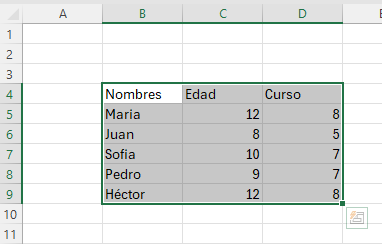
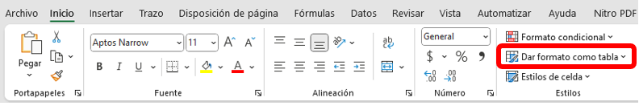
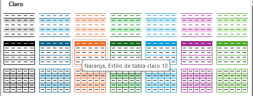
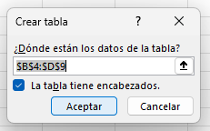
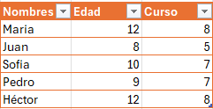
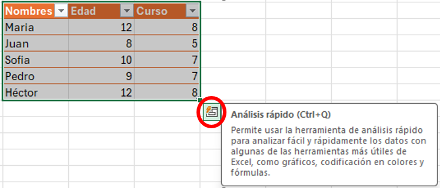
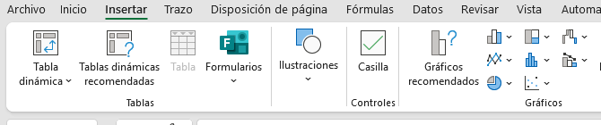
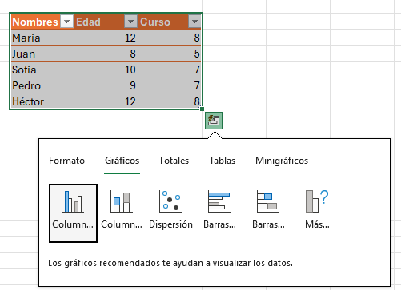
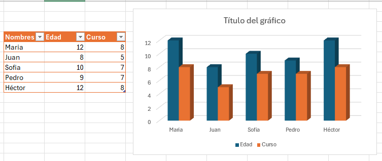

Formulación de tablas
Seleccionar una o varias celdas
1. Para seleccionar un rango, seleccione una celda y, después, con el botón primario del mouse presionado, arrastre las demás..
2. Para seleccionar rangos de celdas y celdas no adyacentes, mantenga presionada la tecla Ctrl y seleccione las celdas.
Crear tablas y aplicarles formato
- Seleccione una celda con datos.

- Seleccione Inicio > Dar formato como tabla.

- Elija un estilo para la tabla.

- En el cuadro de diálogo Crear tabla, establezca el rango de celdas.
- Marque la opción La tabla tiene encabezados si procede.

- Seleccione Aceptar.

Formulación de gráficas.
1. Seleccionamos la Tabla. O vamos a la parte de insertar y elegimos un grafico

2. Ingresamos en gráficos.

3. Finalizamos eligiendo el diseño de nuestro gráfico.
